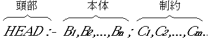

マ シ ン：UNIXマシン 環 境：UNIX 言 語：C ソース量：0.4 MB 文 書：ユーザーズマニュアル (日本語／英語)
ｃｕ−Ｐｒｏｌｏｇは、ホーン節の拡張である次の制約付ホーン節（ＣＨＣ） にて記述される。

ここで、制約部分には
member(X,[ga,wo,ni]) や head_feature_principle(H,M,D) などの、ユーザが定義した述語を用いることができるのである。制約解消系で は、プログラム変換の技法であるunfold/fold変換をヒューリスティックスで 制御しているのもユニークな点である。ｃｕ−Ｐｒｏｌｏｇの特徴を生かした応用として、制約ベースの日本語文法理 論である日本語句構造文法（ＪＰＳＧ）に基づく、簡単な日本語のパーザを付 す。ここでは、自然言語の辞書や文法が、部分項および組合せ制約によりエレ ガントに記述されているのを見ることができるだろう。
ＦＴＰ